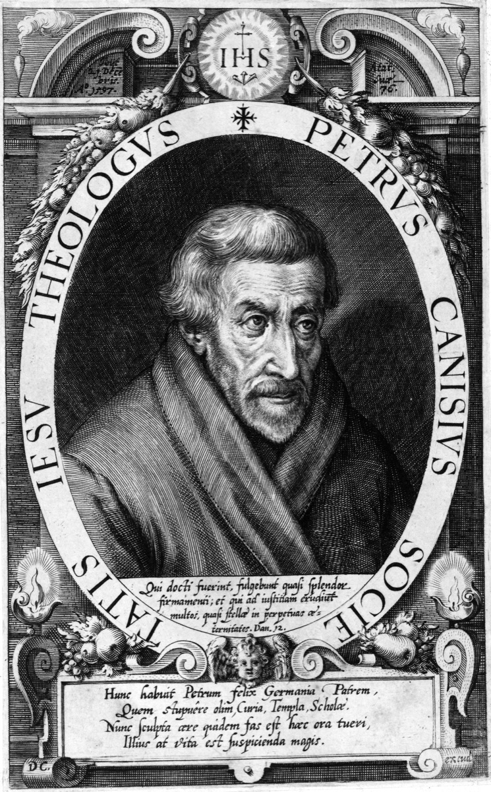

Crkveni naučitelji i teolozi
Crkveni naučitelj · Svećenik · Učitelj
Sv. Petar Kanizije
1521. – 1597.
Učitelj, propovjednik i pisac katekizama pomagao je ljudima razumjeti katoličku vjeru u Europi obilježenoj reformacijom. Njegove škole i knjige ostavile su trajan trag, zbog kojega je proglašen crkvenim naučiteljem.

Izvor slike
- Spomendan
- 21. prosinca
- Zaštitništvo
- Nije navedeno u izvoru
- Životni vijek
- 1521. – 1597.
- Djelovanje
- Obrazovanje i poučavanje vjere · Pisanje, znanost i umjetnost
- Razdoblje
- 16. stoljeće
- Slavi se
- 21. prosinca · Neobvezni spomendan
- Liturgijski stupanj
- Neobvezni spomendan
- Rodno ime
- Pieter Kanis
Životopis
Petar Kanizije pripada naraštaju koji je morao iznova poučavati katoličku vjeru u europskim zemljama obilježenima reformacijom. Bio je isusovac, svećenik, učitelj i propovjednik. Putovao je između sveučilišta, biskupija i mladih redovničkih zajednica, ali središte njegova rada ostala je osoba kojoj je trebalo pomoći da razumije što Crkva vjeruje i kako se ta vjera živi. Škole koje je podizao, katekizmi koje je pisao i propovijedi koje je držao izrasli su iz toga pastoralnog cilja. Zbog trajnog doprinosa crkvenom poučavanju proglašen je crkvenim naučiteljem.
Rođen je 8. svibnja 1521. u Nijmegenu, gradu koji je danas u Nizozemskoj. Otac mu je bio gradski načelnik. Petar je kao mladić studirao u Kölnu, gdje je 1540. stekao naslov magistra. U tom je gradu susretao kartuzijance samostana svete Barbare i ljude povezane s duhovnošću devotio moderna, koja je naglašavala osobnu molitvu, obraćenje i nasljedovanje Krista. Sveučilišno učenje tako se u njegovu životu povezivalo s traženjem dublje vjere. Studij mu je pomagao jasno izložiti vjeru, a molitva ju je ukorjenjivala u svakodnevnom životu.
Odlučujući susret bio je onaj s Petrom Faberom, jednim od prvih drugova Ignacija Lojolskoga. Kanizije je pod njegovim vodstvom obavio ignacijevske duhovne vježbe i 8. svibnja 1543. stupio u Družbu Isusovu. Nova je redovnička zajednica povezivala molitveno razlučivanje s raspoloživošću za poslanje kamo je Crkvi potrebna pomoć. Petar je dovršio teološki studij, a 1546. u Kölnu je zaređen za svećenika. Još prije ređenja poučavao je Sveto pismo i priređivao izdanja tekstova crkvenih otaca. Rano je pokazao da se crkvena obnova ne može osloniti na brze parole: potrebno je poznavati izvore vjere i sposobno ih predavati.
Godine 1547. bio je na Tridentskom saboru kao teolog kardinala Otta Truchsessa von Waldburga, a ondje je surađivao s isusovcima Diegom Laínezom i Alfonsom Salmerónom. Sabor je odgovarao na doktrinarna pitanja i tražio obnovu crkvenoga života. Kanizije je tu zadaću poslije prenosio u nastavu, propovijedanje i formaciju svećenika. Nakon boravka u Rimu Ignacije ga je poslao u Messinu, gdje je u isusovačkom kolegiju poučavao i obavljao svakodnevne kućne poslove. Za čovjeka koji će razgovarati s vladarima i biskupima ta je škola jednostavnih zadataka bila dio redovničkoga odgoja.
Doktorat iz teologije stekao je 1549. u Bologni. Iste je godine dobio poslanje za njemačke zemlje. Papa Pavao III. primio ga je prije odlaska, a Kanizije je u rimskoj bazilici svetoga Petra molio za pomoć apostola Petra i Pavla. Ta je molitva ostala povezana s njegovim osjećajem odgovornosti za zajednice u koje će biti poslan. U Bavarskoj je započeo rad u Ingolstadtu. Ondje je predavao, sudjelovao u vodstvu sveučilišta i propovijedao narodu. Sveučilišna predavaonica i gradska crkva bile su mu jednako važne, jer je vjera trebala oblikovati i učenoga teologa i čovjeka koji je nakon rada dolazio slušati propovijed.
U Beču je nakratko vodio biskupijske poslove i služio u bolnicama i zatvorima. Prihvaćao je poslove koji su tražili poznavanje crkvenoga nauka, ali i susret s ljudima čiji je život bio daleko od akademskih rasprava. Posjećivanje bolesnih i zatvorenih dalo je njegovoj službi mjeru evanđeoske blizine. Istodobno je pripremao djelo po kojemu će ga poznavati mnogi naraštaji: sažet, sustavan prikaz kršćanskoga nauka. Susreti s ljudima različite dobi i obrazovanja pomagali su mu oblikovati pouku koja se može predavati, pamtiti i povezati sa sakramentalnim životom.
Između 1555. i 1558. sastavio je tri katekizma za različite skupine. Opsežniji je bio namijenjen studentima koji su mogli pratiti temeljna teološka pitanja; kraći je služio početnoj pouci djece, a treći mladima sa školskom naobrazbom. Kanizije je nauk izlagao pitanjima i odgovorima, oslanjajući se na Sveto pismo i crkvenu predaju. Govorio je o vjeri, molitvi, zapovijedima i sakramentima jezikom prikladnim onima koji uče. Katekizmi su se brzo širili i doživjeli brojna izdanja već za njegova života. Njihova vrijednost bila je u jasnoći: vjernik je dobivao pouzdan oslonac za razumijevanje vlastite vjere.
Poučavanje je pratio rad na izgradnji ustanova. Kanizije je 1556. osnovao isusovački kolegij u Pragu, a kao prvi poglavar isusovačke pokrajine Gornje Njemačke obilazio je zajednice i pomagao otvarati nove škole. Družba je u tom dijelu Europe bila mlada; trebalo je pronaći učitelje, oblikovati zajednički život i osigurati da pouka ne prestane nakon jednoga uspjelog nastupa. Kolegiji su učenicima pružali humanističku i vjersku formaciju, a gradovima stabilna mjesta učenja. U tome se vidi Kanizijeva strpljivost: radio je za ljude koje možda neće osobno upoznati, jer će u njegove škole doći mnogo poslije njega.
Njegova su putovanja imala i javnu stranu. Sudjelovao je u vjerskom razgovoru u Wormsu 1557., vršio papinsko poslanje u Poljskoj, bio nazočan na državnim skupštinama u Augsburgu i ponovno sudjelovao u radu Tridentskoga sabora. U tim je okolnostima odlučno zastupao katolički nauk. Nije mogao izbjeći raspravu o pitanjima koja su dijelila kršćane, no nastojao je razlikovati osporavanje učenja od vrijeđanja čovjeka. Katoličku je vjeru izlagao jasno, a sa sugovornicima razgovarao bez prezira.
Razumio je i da razdor nije nastao samo zbog tuđih pogrešaka. Loša pouka, slaba priprava klera i nedostatak vjerodostojnoga života u vlastitoj zajednici tražili su ozbiljan odgovor. Zato je obnova za njega uključivala propovijed, školu, sakrament i svakodnevnu odgovornost službenika Crkve. Pisao je crkvenim poglavarima, katkad vrlo otvoreno, potičući ih na savjesnije vodstvo. Iza pisama i ustanova stoji jednostavna pastoralna misao: vjernici zaslužuju učitelje koji poznaju vjeru, žive je i mogu je bez grubosti objasniti.
Kanizije je priređivao djela Ćirila Aleksandrijskoga i Lava Velikoga, pisma Jeronima te molitve Nikole iz Flüea. Pisao je pobožne knjige, životopise svetaca i tekstove za propovijedanje. Time je crkvenu predaju učinio dostupnijom učiteljima i propovjednicima svojega vremena. Posebno je njegovao marijansku pobožnost, a u djelu o Blaženoj Djevici Mariji sustavno je izlagao katoličko razumijevanje njezina mjesta u otajstvu Krista. Njegov se interes nije zaustavljao na jednoj vrsti knjige: urednički, katehetski i pastoralni rad pripadali su istom nastojanju da ljudi dođu do dobrih izvora.
U njegovim duhovnim spisima središnje mjesto ima prijateljstvo s Isusom. Molitva, osobito svakodnevno razmatranje, hranila je posao koji ga je vodio od grada do grada. Govorio je o sudjelovanju u liturgiji i o osobnoj molitvi kao povezanim oblicima kršćanskoga života. Propovjednik koji govori o Kristu treba i sam ostati učenik pred njim. Ta povezanost objašnjava zašto su Kanizijevi katekizmi bili više od školskoga priručnika: trebali su pomoći čovjeku da upozna Krista u vjeri Crkve, moli, prima sakramente i živi među drugima odgovorno.
Godine 1580. nastanio se u Fribourgu u Švicarskoj. Ondje je sudjelovao u osnivanju kolegija svetoga Mihaela te nastavio propovijedati i pisati. Nakon što mu je zdravlje oslabilo, radio je uz pomoć suradnika koliko je mogao. Umro je u Fribourgu 21. prosinca 1597. Papa Pio IX. proglasio ga je blaženim 1864., a Pio XI. svetim i crkvenim naučiteljem 1925. Crkva njegov spomendan slavi 21. prosinca. Naziv drugi apostol Njemačke izražava razmjere njegova poslanja, ali ne iscrpljuje njegov život: od kartuzijanske crkve u Kölnu do friburškoga kolegija ostao je redovnik koji je vjeru povezivao s učenjem i molitvom.
Petar Kanizije pokazuje kako se Crkva obnavlja kada se istina strpljivo predaje, a zajednica brine za vlastitu vjerodostojnost. Njegov odgovor na podjele nije bio samo u knjigama ni samo u javnim raspravama. Bio je u učionici, bolnici, ispovjedaonici, kolegiju i propovjedaonici. Ondje je nastojao služiti Kristu i ljudima koji su tražili pouku, utjehu ili novu priliku za vjeru. U tome su njegova svetost i naučiteljstvo ostali bliski i nakon što su se promijenile rasprave njegova stoljeća.
Pročitaj više na izvornoj stranici ↗
Molitve i dodatni sadržaji
Misli
Ako imate previše posla, uz Božju pomoć naći ćete vremena da sve obavite.Misli svetaca